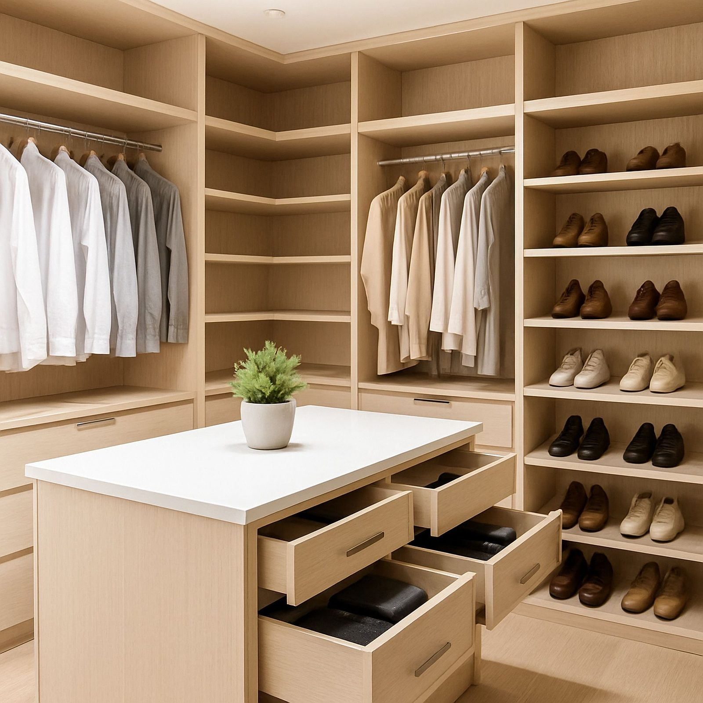
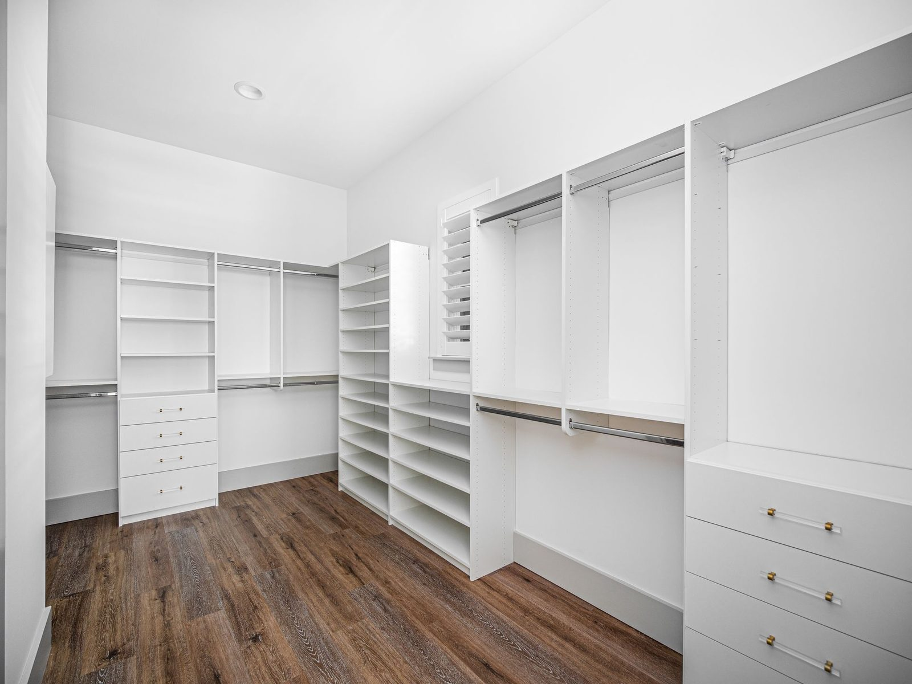

The honest answer: $650 to $4,200 for most closets
A six-foot reach-in with double hang, a top shelf and a four-drawer bank runs about $853 installed in our entry color. A ten-foot walk-in with an island, two hanging towers and glass doors lands closer to $4,200. Everything else sits between those two numbers.
That spread is not vagueness. It is four variables, and once you know them you can price your own closet to within about ten percent before anyone visits your house.
1. Linear feet of wall, not square feet of room
This is the one most people get wrong. A closet is priced by how much wall it runs along, not by the floor area of the room. A 10×10 walk-in with cabinetry on one wall costs less than a 6×8 walk-in with cabinetry on three. Measure the walls you want covered and ignore the floor.
Our work comes out around $140 to $320 per linear foot installed, depending on what goes in it and which color you pick.
2. What goes inside the bays
Hanging is the cheapest thing you can put in a closet. A rod and two brackets costs a fraction of what the same vertical space costs filled with drawers. Ranked from cheapest to most expensive per foot of height:
- Long hang and double hang: just a rod
- Adjustable shelving: a shelf and four pins each
- Shoe shelving: more shelves, closer together
- Drawer banks: a box, two glides and a front each
- Doors and glass fronts: hinges, alignment and labour
A bay filled with hanging might be $180. The same bay filled with drawers is closer to $520. This is why two closets of identical size can differ by a factor of two.
3. Color level
We carry 79 colors across four price levels. Level 2 covers the everyday woodgrains and solid colors. Level 5 is the high-gloss and heavy-texture lines. Level 5 costs about 1.6 times Level 2 for the same closet. Real money, but it is the single easiest place to adjust the budget without losing any storage.

A trick that costs nothing: use a Level 2 color for the carcass and a Level 5 for the drawer fronts only. The fronts are what you see. Most of the best-looking closets we build do exactly that.
4. Installation and the things that are not in the brochure
Our price is installed, and that includes taking the packaging away and patching what we drilled. Watch for quotes that are not. The common exclusions are removal of the existing wire shelving, drywall repair, and anything electrical if you want lighting.
Why closet organizers seem expensive
Because a closet is cabinetry. It is the same three-quarter-inch material, the same edgebanding, the same hardware and the same labour as a kitchen. It just has no countertop and no appliances. People compare it to a wire shelf from a big-box store and the gap looks absurd. Compared to kitchen cabinetry per linear foot, a custom closet is cheap.
Price yours before you call anyone
Our 3D builder is wired to the same price list we quote from. Set your wall dimensions, fill the bays, pick a color, and the number it shows is the number we would put on paper.
What the color does to the number
After linear feet, the color is the biggest single lever, and it is the one people underestimate. The cabinetry is identical: same ¾" core, same construction, same hardware. All that changes is what the decorative surface of the board costs per square foot.
| Level | What it is, and roughly what it does to the board cost |
|---|---|
| Level 1 | Stock white. The cheapest board we buy and the quickest, about a week. |
| Level 2 | Everyday woodgrains, solids and textiles. Around twice the board cost of white. Two to four weeks. |
| Level 3 | Deeper textures, synchronised grain. A little above Level 2. |
| Level 4 | Specialty decors held in smaller quantities. Three to four weeks. |
| Level 5 | High gloss and premium panels. Four to six times the board cost of white, and up to eight weeks. |
On a typical reach-in that is not a rounding difference, it is a meaningful share of the quote. Which is worth knowing early, because it is also the easiest thing to change your mind about. All 79 of them are here with the real lead time on each.

Drawers are the other lever
A shelf is one panel. A drawer is a box, a pair of glides, a front, a pull and the labour to hang it square. That is why a drawer bank costs several times what the same height of open shelving costs, and why a quote can move a long way on a decision that feels small.
None of which means fewer drawers. It means put them where they earn it. Drawers are worth paying for at waist height, where you use them every day. A drawer at ankle height that holds spare bedding is a shelf with an expensive lid on it.
What is not in the number
Our figure is cabinetry. We say so on the builder and on every quote, because the two things most often hidden in a headline price are these.
- Installation. Ours is quoted separately and plainly, including taking the old shelving out and patching the holes it leaves.
- Doors on the closet itself. If the room needs new bypass or bi-fold doors, that is a separate trade and a separate line. What we will tell you is how your existing doors change the cabinetry, because they do.
The one question worth asking any quote: is this installed, and does it include removing what is there now? A price that is neither of those things is not comparable to one that is both.
How to get a real number today
Put your own room into the 3D builder. It prices section by section off the same parts list we order from, so it is not a range and it is not a guess. Change the color and watch it move. Mark the window on your wall and watch the layout change with it.